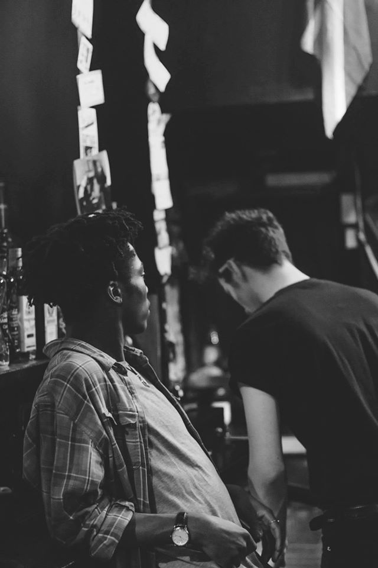

Where were you born?
"I was born in Lagos, Nigeria.
I lived there till the age of 6.
Then I moved to Ireland with my mother, sister and soon to be brother.
Mom did all the moving. We watched telly mostly...
Fastforward a whole bunch; throw in a few life changing
adventures/encounters; and voile here I am.
25 and living in Newcastle."
When did you start playing the guitar?
"I was 19, in my second year of university and bored.
Quite bored.
I also play the drums pretty fluently, y'know.
A lot of my songs were birthed behind a drum kit.
Not to sound pretentious or anything"
What's your favourite movie?
"Jumper."
"I know you didn't ask but my faourite movie snack
is mashed potatoes"
"Like.. really creamy mash."
"yeah."
What's the last thing that made you cry?
"hmm"
"Realising my insignificance slash impermanence(in the grand scheme of things)"
"That my love of attention and constant performance stem from a place of insecurity
and a deep yearning for acceptance.
Having to look at myself honestly and realising that it's dangerous
to always see yourself as the 'good gal or guy'
because no one is fully good or bad.
Bit of a humbling realisation.
It all happened at 6am in the middle of a field in Suffolk."
Okay..
er...
Jackie Chan or Bruce Lee?
"Ip man."
"Next question."